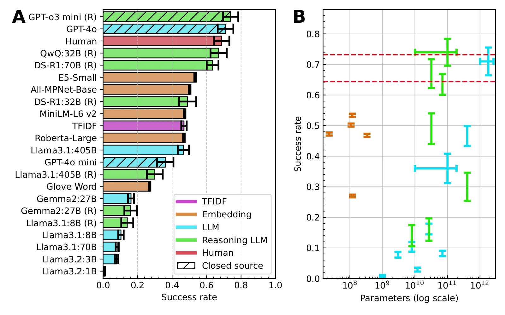
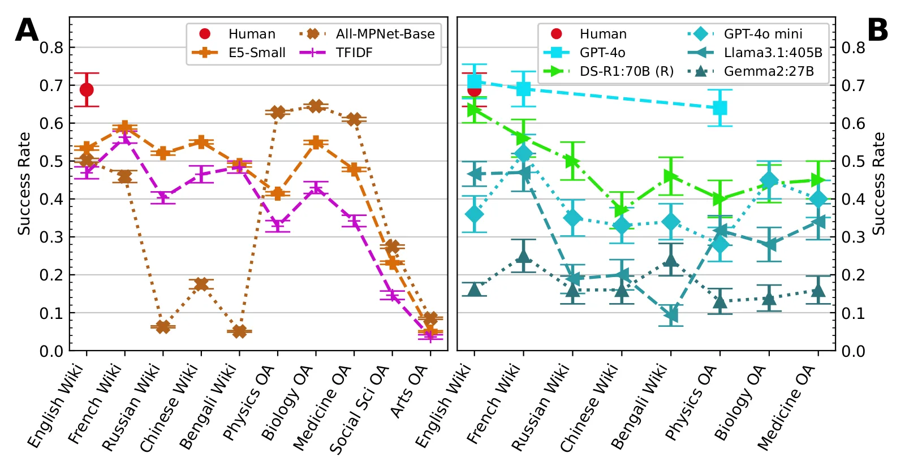

O Problema da Navegação Semântica
A recuperação de informação em coleções de documentos massivas e não indexáveis é um desafio crescente. Modelos de linguagem (LLMs) são frequentemente invocados para automatizar tarefas que exigem conhecimento especializado, mas sua capacidade de navegar semanticamente entre conceitos desconexos ainda é pouco compreendida. Este estudo, conduzido pelo Instituto Alan Turing, investiga se esses modelos podem realizar buscas estruturadas em grafos de conhecimento, simulando a forma como humanos conectam ideias.
O experimento central utiliza o 'Jogo da Wikipedia', uma tarefa clássica onde o objetivo é chegar a um artigo-alvo partindo de um artigo inicial, clicando apenas em links internos. A tarefa exige que o agente avalie continuamente a relevância semântica dos links disponíveis. Enquanto embeddings de frases são projetados para medir similaridade textual, os LLMs têm a potencial vantagem de simular estratégias de planejamento, o que poderia torná-los superiores na navegação.
Estudos anteriores avaliaram LLMs nesse jogo, mas muitas vezes dependiam de APIs externas ou usavam subconjuntos pequenos dos dados. Isso limita a reprodutibilidade e a escala. Os autores propõem uma abordagem diferente: construir grafos locais completos de Wikipedia e de literatura acadêmica (via OpenAlex), permitindo que os modelos naveguem sem latência de API ou limites de cota, oferecendo um benchmark mais fiel ao uso real em pipelines de dados.

Construindo o Terreno de Teste
A Wikipedia é, essencialmente, um grafo gigante. A versão em inglês possui mais de seis milhões de artigos e quase 300 milhões de links. Os autores mapearam essa estrutura para criar um ambiente de teste controlado. Eles selecionaram cinco idiomas diferentes e cinco domínios da literatura acadêmica (Biologia, Medicina, Física, etc.) do dataset OpenAlex. Isso permite avaliar se a capacidade de navegação generaliza para além do conhecimento geral da Wikipedia.
A construção desses grafos é crucial. Ao invés de fazer chamadas assíncronas para APIs, o código disponibilizado pelos autores permite a navegação local. Isso elimina ruídos externos e permite medir o tempo de decisão do modelo com precisão. O grafo da Wikipedia é denso e altamente conectado, enquanto os grafos do OpenAlex são mais esparsos, com menos links por artigo e títulos mais técnicos. Essa diferença estrutural é um fator chave para interpretar os resultados.
Os modelos testados incluem embeddings de frases, métodos baseados em TF-IDF (term frequency-inverse document frequency, que mede a importância de palavras) e diversos LLMs, desde versões menores até as maiores disponíveis. O benchmark humano foi incluído para estabelecer uma linha de base realista. O objetivo não é apenas ver quem chega mais rápido, mas entender como as diferentes arquiteturas abordam a incerteza da navegação.
Metodologia: Como os Modelos Jogam
A configuração do jogo impõe um limite de cem passos. O modelo falha se atingir esse limite, se entrar em um beco sem saída (artigo sem links internos) ou se alucinar links que não existem. Para os embeddings, a estratégia é geralmente gulosa: escolher o link que maximiza a similaridade com o artigo alvo. Para os LLMs, a entrada é o texto do artigo atual e o alvo, e a saída é a escolha do próximo link.
Os LLMs têm acesso ao contexto completo do artigo, o que lhes permite identificar entidades e conceitos-chave. Diferente dos embeddings, que operam em vetores fixos, os LLMs podem usar raciocínio chain-of-thought (cadeia de pensamento) para planejar rotas. No entanto, o estudo mostra que mesmo com raciocínio, os modelos enfrentam dificuldades significativas em grafos complexos. A eficiência não é apenas sobre precisão, mas sobre a quantidade de passos necessários para convergir.
Os autores também testaram a robustez dos modelos em diferentes idiomas. Isso é importante porque a distribuição de dados de treinamento varia enormemente entre línguas de alto e baixo recurso. Se um modelo é treinado predominantemente em inglês, espera-se que seu desempenho degrade em outros idiomas, a menos que a arquitetura seja verdadeiramente multilingue e balanceada. O experimento verifica se a 'intuição' de navegação é transferível.

Resultados: Humanos vs. Máquinas
Os resultados principais são surpreendentemente modestos. Nenhum modelo superou significativamente os humanos em termos de taxa de sucesso. Os melhores LLMs, incluindo GPT-o3 mini, GPT-4o, QwQ:32B e DeepSeek-R1:70B, alcançaram taxas de sucesso comparáveis às dos humanos. No entanto, quando se olha para a eficiência, a diferença é abismal. Os modelos levaram, em média, mais passos para chegar ao destino que os humanos.
Isso sugere que, embora os modelos tenham o conhecimento factual necessário, eles não possuem a mesma 'intuição' heurística que os humanos. Os humanos são melhores em descartar caminhos irrelevantes rapidamente. Os modelos, por outro lado, tendem a explorar mais o espaço de busca, às vezes ficando presos em subgrafos densos que não levam ao alvo. A distribuição de passos mostra que os humanos são mais consistentes na eficiência.
Um achado interessante foi o desempenho de modelos de raciocínio. O QwQ:32B, um modelo focado em raciocínio, competiu de perto com o GPT-4o. Isso indica que técnicas de planejamento podem compensar o tamanho menor do modelo. Curiosamente, o Llama:8B superou o Llama:70B em algumas métricas, o que pode indicar que o processo de treinamento do modelo maior não foi otimizado para tarefas de navegação estruturada, ou que ele sofre mais com ruído no contexto.
Generalização: Idiomas e Domínios
A variação por idioma foi significativa. Alguns modelos performaram melhor na Wikipedia em francês do que na em inglês. Os autores argumentam que isso não significa que os modelos são melhores em francês, mas sim que o grafo da Wikipedia francesa é menor e melhor conectado. Grafos menores são intrinsecamente mais fáceis de navegar, pois há menos caminhos possíveis e menos chances de se perder em ramificações irrelevantes. Isso destaca a importância da topologia do grafo sobre a fluência do modelo.
Ao testar no OpenAlex, os modelos mostraram capacidade de generalização. Apesar dos grafos científicos serem mais esparsos e os títulos mais técnicos, alguns LLMs mantiveram taxas de sucesso dentro da margem de erro da Wikipedia em inglês. Isso é um sinal positivo: os modelos não estão apenas memorizando links da Wikipedia, mas aplicando o conceito de navegação semântica a novos domínios. No entanto, a eficiência caiu drasticamente em comparação com os humanos.
A comparação com benchmarks anteriores, como o LLM-WikiRace, revela diferenças metodológicas. Estudos anteriores usaram conjuntos de jogos 'fáceis', onde humanos falham pouco. Este estudo usou um conjunto mais diversificado, expondo as limitações reais dos modelos. A permissão para retroceder (backtracking) melhora a eficiência dos modelos, mas os humanos ainda mantêm uma vantagem natural na tomada de decisão rápida sem necessidade de correção explícita.

Limitações e Implicações
O estudo não responde se os modelos podem navegar em artigos publicados após a data de treinamento. Os autores exploraram isso com uma amostra pequena de artigos de 2024, mas os resultados não foram conclusivos o suficiente para serem destacados como principal achado. Isso deixa em aberto a capacidade dos modelos de lidar com conhecimento temporalmente recente em grafos dinâmicos.
Outra limitação é a dependência da qualidade dos links. Se os links na Wikipedia ou no OpenAlex forem mal construídos ou ambíguos, os modelos herdam esses erros. Humanos podem ignorar links ruins com base em contexto implícito, mas modelos baseados em texto podem ser enganados por links enganosos. A robustez do grafo é tão importante quanto a inteligência do modelo.
Para praticantes, a mensagem é clara: não confie cegamente em LLMs para navegação automática em grandes bases de conhecimento. Eles podem ter sucesso, mas serão lentos e propensos a ciclos. A combinação de embeddings para filtragem inicial e LLMs para decisão final pode ser uma estratégia viável, mas requer ajuste fino. O código aberto fornecido pelos autores permite que a comunidade continue a testar e melhorar essas abordagens.
Conclusão
O 'Jogo da Wikipedia' revela que, embora os LLMs possuam a informação semântica necessária para navegar, eles não replicam a eficiência humana. A diferença não é de capacidade, mas de estratégia. Humanos usam heurísticas rápidas; modelos usam busca exaustiva ou similaridade vetorial. Os melhores modelos atuais, como GPT-4o e QwQ:32B, estão próximos dos humanos em sucesso, mas distantes em eficiência.
Este trabalho estabelece um novo padrão para avaliação de navegação em grafos, ao fornecer infraestrutura local e aberta. Ele mostra que o desempenho é altamente dependente da topologia do grafo e do domínio. Para cientistas de dados, isso significa que a escolha do modelo deve considerar a estrutura dos dados de destino, não apenas a qualidade geral do modelo. A navegação automática é possível, mas ainda requer supervisão humana ou estratégias híbridas para ser prática.
O que fica
- Nenhum modelo superou significativamente os humanos, mas os melhores LLMs alcançaram taxas de sucesso comparáveis, embora com mais passos.
- Os autores construíram grafos locais de Wikipedia e OpenAlex, eliminando a dependência de APIs de terceiros para testes robustos.
- Modelos de raciocínio (como QwQ:32B) competiram com GPT-4o, sugerindo que estratégias de planejamento ajudam na navegação.
- O desempenho variou drasticamente por idioma e domínio, indicando que a conectividade do grafo impacta mais que a fluência do modelo.
Paper original: Can Language Models Play the Wikipedia Game?
Comentários
Nenhum comentário ainda. Seja o primeiro.